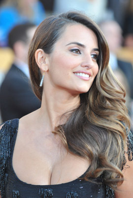
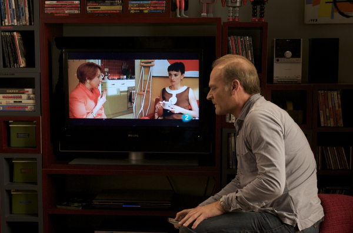
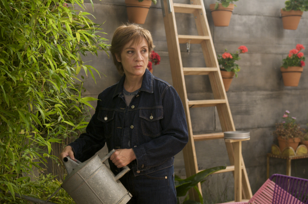
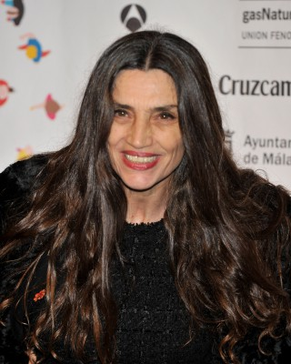
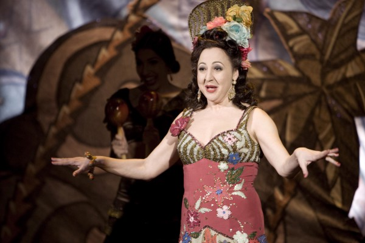
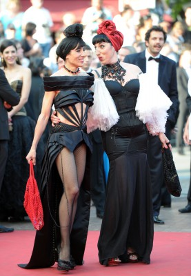
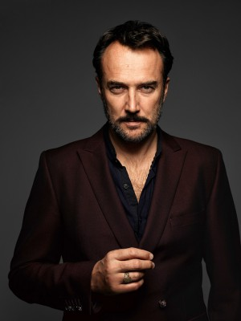
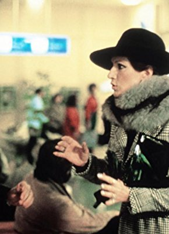

#5610 Zerrissene Umarmungen
Alternativ: Broken Embraces (Englischer Titel)

 IMDB-Wertung: 7.2 / 10
IMDB-Wertung: 7.2 / 10  Metascore: 0
Metascore: 0 
Harry Caine ist ein erblindeter Drehbuchautor, der bis zu dem Unfall, der ihm das Augenlicht raubte, unter seinem Namen, Mateo Blanco, Filme drehte. Nach dem Tod seines damaligen Produzenten Martel nimmt dessen Sohn Ray X Kontakt mit Harry auf und will ein Drehbuch von ihm, das Andenken des verabscheuten Vaters in den Schmutz ziehen soll. Caine erinnert sich zurück an die Zeit, als er für Martel den Film "Mädchen und Koffer" drehte und mit seiner Hauptdarstellerin Lena eine Affäre begann. Der Anfang einer komplizierten Tragödie, denn Lena war mit Martel liiert. Und der ist blind vor Eifersucht.
Jahr: 2009
Dauer: 127 Minuten
FSK: 12
Land: Spanien Studio: TOBIS FilmTonspuren: DTS - ,
Untertitel: Deutsch,
Auflösung: 1080p (1920x816) Größe: 6553 MB
Genre: Thriller, Drama, Liebe
Regisseur: Pedro Almodóvar
Drehbuch: Lisa Azuelos
Soundtrack:
Darsteller:
-  Penélope Cruz als Lena
-  Lluís Homar als Mateo Blanco / Harry Caine
-  Blanca Portillo als Judit García
- José Luis Gómez als Ernesto Martel
- Rubén Ochandiano als Ray X
- Tamar Novas als Diego
-  Ángela Molina als Madre de Lena
- Chus Lampreave als Portera
- Kiti Mánver als Madame Mylene
 Lola Dueñas als Lectora de labios
Lola Dueñas als Lectora de labios- Mariola Fuentes als Edurne
-  Carmen Machi als Chon
- Kira Mir�� als Modelo
-  Rossy de Palma als Julieta
- Alejo Sauras als Álex
- Marta Aledo als Maribel
-  Carlos Leal als
- Dani Martín als
- Javier Giner als
- Karola Sánchez als Ayudante de producción
- Sergio Díaz als Ayudante de dirección , uncredited
- Carlos Sampedro als
- Ramón Pons als Padre de Lena
- Coté Soler als
- Chema Ruiz als Dr. Blasco
- Jons Pappila als
- Javi Coll als Luis
- Juan Bautista Cucarella als
- Lyng Dyrup als
- Enrique Aparicio als
- Enrique Vargas als
- Viviana Espinoza als
- Fernando Lueches als Montador de Avid
- Fernando Iglesias als
- Carlos García Cambero als
- Bina Daigeler als
-  Agustín Almodóvar als
- Esther García als
- Yuyi Beringola als Recepcionista Cinearte , uncredited
- Jaime Fernández-Cid Buscató als Vecino enrollado bar , uncredited
Datei: X:\2009(N-Z)\Zerrissene Umarmungen (2009, FSK12, 1920x816).mkv seit 21.02.2017
Festplatte: HD 2009(G-Z)-2010(A-F)
 Es gibt insgesamt 99 Filme in der Gruppe '2009(N-Z)'
Es gibt insgesamt 99 Filme in der Gruppe '2009(N-Z)'